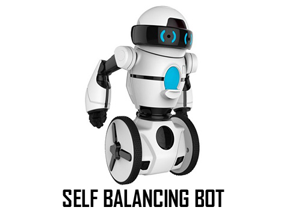

The self-balancing robot is a development in the field of robotics. This two-wheeled self-balancing robot is based on the concept of Inverted pendulum theory. This type of robot has gained fame and interest among researchers and engineers because it utilizes a control system that is used to stabilize an unstable system using efficient microcontrollers and sensors. Two-wheeled balancing robots can be used in several applications with different perspectives such as an intelligent gardener in agricultural fields, an autonomous trolley in hospitals, shopping malls, offices, airports, healthcare applications or an intelligent robot to guide blind or disable people.
Karansingh Bais (Workshop head) – 9527057517
Surbhi Shukla (Student Incharge) – 8149026598
Yash Tawarawala (Co-head) – 9404040442
For complete details and course content, kindly click here
Date: - 3th and 4th March
Duration: - 2 days/4 sessions (14 – 15 hours)
Time: - 10:00 AM onwards
Venue: - EN Seminar Hall
Amount: -5000/- per group (Max 5 people in a group)
Takeaway kits will be provided
Refreshments will be provided to the participants
National level certificate from Technovision & Innovation cell, IIT Bombay/robokart